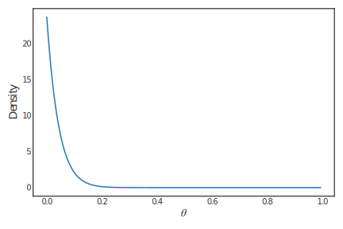
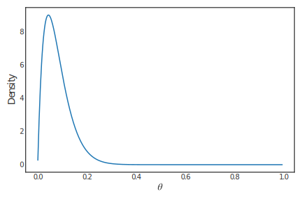

Bayesian inference#
The posterior distribution \(\pi(\theta|\underline{x})\) summarises all our information about \(\theta\) to date. However, sometimes it is helpful to reduce this distribution to a few key summary measures.
Estimation#
Point estimates {#point-estimates .unnumbered}#
There are many useful summaries for a typical value of a random variable with a particular distribution; for example, the mean, mode and median. The mode is used more often as a summary than is the case in frequentist statistics.
Interval estimates#
A more useful summary of the posterior distribution is one which also reflects its variation. For example, a \(100(1-\alpha)\%\) Bayesian credible interval for \(\theta\) is any region \(C_\alpha\) that satisfies \(\text{Pr}(\theta\in C_\alpha|\underline{x})=1-\alpha\). If \(\theta\) is a continuous quantity with posterior probability density function \(\pi(\theta|\underline{x})\) then
The usual correction is made for discrete \(\theta\), that is, we take the largest region \(C_\alpha\) such that \(\text{Pr}(\theta\in C_\alpha|\underline{x})\leq 1-\alpha\).
Clearly these intervals are not unique, since there will be many intervals with the correct probability coverage for a given posterior distribution.
A \(100(1-\alpha)\%\) highest density interval (HDI) for \(\theta\) is the region \(C_\alpha=\{\theta:~\pi(\theta|\underline{x})\geq\gamma\}\) where \(\gamma\) is chosen so that \(\text{Pr}(\theta\in C_\alpha|\underline{x})=1-\alpha\). This region is sometimes called a most plausible Bayesian credible interval. If the posterior distribution has many modes then it is possible that the HDI will be the union of several disjoint regions; for example, the HDI could take the form \(C_\alpha=(a,b)\cup(c,d)\cup(e,f)\), where \(a<b<c<d<e<f\).
Interpretation of confidence intervals {#interpretation-of-confidence-intervals .unnumbered}#
Suppose \(C_B\) is a 95% Bayesian credible interval for \(\theta\) and \(C_F\) is a 95% frequentist confidence interval for \(\theta\). These intervals do not have the same interpretation:
The probability that \(C_B\) contains \(\theta\) is 0.95.
The probability that \(C_F\) contains \(\theta\) is either 0 or 1 — since \(\theta\) does not have a (non-degenerate) probability distribution.
The interval \(C_F\) covers the true value \(\theta\) on 95% of occasions — in repeated applications of the formula.
Example 4.1#
Suppose that the posterior distribution for \(\theta\) is a
\(\text{Beta}(1,24)\) distribution, with probability density function
A plot of this distribution is given in Figure fig:ci1{reference-type=”ref” reference=”fig:ci1”}.
{#fig:ci1}
Determine the \(100(1-\alpha)\%\) HDI for \(\theta\).
Solution to Example 4.1#
The HDI must include those values of \(\theta\) with highest posterior density and so must take the form \(C_\alpha=(0,b)\). The end-point \(b\) must satisfy
Now
Hence
Therefore, a \(100(1-\alpha)\%\) HDI for \(\theta\) is \((0,1-\alpha^{1/24})\).
Example 4.2#
Suppose we have a random sample \(\underline{x}e\) from a
\(\mathcal{N}(\mu,1/\tau)\) distribution (where \(\tau\) is known). We have
seen that, assuming vague prior knowledge, the posterior distribution is
\(\mu|\underline{x}\sim \mathcal{N}(\bar x,1/(n\tau))\). Determine the \(100(1-\alpha)\%\) HDI
for \(\mu\).
Solution to Example 4.2#
This distribution has a symmetric bell shape and so the HDI takes the form \(C_\alpha=(a,b)\) with end-points
where \(z_\alpha\) is the upper \(\alpha\)-quantile of the \(\mathcal{N}(0,1)\) distribution. Therefore, the 95% HDI for \(\mu\) is
Note that this interval is numerically identical to the 95% frequentist confidence interval for the (population) mean of a normal random sample with known variance. However, the interpretation is very different.
Example 4.3#
Suppose that the posterior distribution for \(\theta\) is a []{#ex:hdi
label=”ex:hdi”} \(\text{Beta}(2,23)\) distribution, with probability
density function
A plot of this distribution is given in Figure fig:ci2{reference-type=”ref” reference=”fig:ci2”}.
{#fig:ci2}
Determine the \(100(1-\alpha)\%\) HDI for \(\theta\).
Solution to Example 4.3#
Since the posterior density is unimodal, we seek \(0 < a < b < 1\) such that
and \(\pi(a|\underline{x}) = \pi(b|\underline{x})\).
Letting \(F(a|\underline{x}) = \text{Pr}(\theta < a|\underline{x})\) denote the posterior CDF, this is equivalent to seeking \(0<a<b<1\) such that
and \(\pi(a|\underline{x}) = \pi(b|\underline{x})\).
Computation of HDIs for unimodal distributions {#computation-of-hdis-for-unimodal-distributions .unnumbered}#
Suppose that we require the HDI (\(a,b\)) for a unimodal distribution with density \(f(\cdot)\) and distribution function \(F(\cdot)\). We have seen that if one of the end-points is known (because of the shape of the distribution) or the distribution is symmetric then the solution is in terms of the distribution’s percentage points. When this is not the case, the problem requires a numerical scheme to find \(a\) and \(b\) satisfying
The solution can be found by noticing that it also minimizes the function
where \(k>0\) is a tuning parameter that tries to ensure that both terms
are zeroed. Therefore, we can used the R optimizer function optim to
determine \(a\) and \(b\).
Example ex:hdi{reference-type=”ref” reference=”ex:hdi”} (continued) {#example-exhdi-continued .unnumbered}#
Suppose we need the 95% HDI for \(\theta\) when
\(\theta|\underline{x}\sim \text{Beta}(2,23)\). One slight complication
with using the above method to determine the HDI \((a,b)\) is that both
\(a\) and \(b\) are restricted to the unit interval. However, the R
function optim has options for dealing with such cases. It also needs
initial guesses at the values of \(a\) and \(b\). Here we base these on the
values of the 95% equi-tailed Bayesian credible interval. We also take
\(k=0.0001\) to balance the conditions to be zeroed.
The R code to determine \(a\) and \(b\) is
g = function(x){
a=x[1]
b=x[2]
g1 = (pbeta(b,2,23) - pbeta(a,2,23) - 0.95)^2
g2 = 0.0001 * (dbeta(b,2,23) - dbeta(a,2,23))^2
return(g1 + g2)
}
initiala=qbeta(0.025,2,23)
initialb=qbeta(0.975,2,23)
res=optim(c(initiala,initialb),g,method="L-BFGS-B",lower=0,upper=1)
a=res$par[1] b=res$par[2]
and gives \(a=0.002211733\) and \(b=0.1840109\), with \(F(b)-F(a)=0.9500041\) and \(f(b)-f(a)=-0.004484121\). Thus the 95% HDI is \((0.002211733,0.1840109)\).
Prediction#
Much of statistical inference (both Frequentist and Bayesian) is aimed towards making statements about a parameter \(\theta\). Often the inferences are used as a yardstick for similar future experiments. For example, we may want to predict the outcome when the experiment is performed again.
Clearly there will be uncertainty about the future outcome of an experiment. Suppose this future outcome \(Y\) is described by a probability (density) function \(f(y|\theta)\). There are several ways we could make inferences about what values of \(Y\) are likely. For example, if we have an estimate \(\hat{\theta}\) of \(\theta\) we might base our inferences on \(f(y|\theta=\hat{\theta})\). Obviously this is not the best we can do, as such inferences ignore the fact that it is very unlikely that \(\theta=\hat{\theta}\).
Implicit in the Bayesian framework is the concept of the predictive distribution. This distribution describes how likely are different outcomes of a future experiment. The predictive probability (density) function is calculated as
when \(\theta\) is a continuous quantity. From this equation, we can see that the predictive distribution is formed by weighting the possible values of \(\theta\) in the future experiment \(f(y|\theta)\) by how likely we believe they are to occur \(\pi(\theta|\underline{x})\).
If the true value of \(\theta\) were known, say \(\theta_0\), then any prediction can do no better than one based on \(f(y|\theta=\theta_0)\). However, as (generally) \(\theta\) is unknown, the predictive distribution is used as the next best alternative.
We can use the predictive distribution to provide a useful range of plausible values for the outcome of a future experiment. This prediction interval is similar to a HDI interval. A \(100(1-\alpha)\%\) prediction interval for \(Y\) is the region \(C_\alpha=\{y:~f(y|\underline{x})\geq\gamma\}\) where \(\gamma\) is chosen so that \(\text{Pr}(Y\in C_\alpha|\underline{x})=1-\alpha\).
Example 4.4#
Suppose that \(X\) is the number of expensive goods sold in a shop over 24
days. If \(\theta\) is the expected number of sales per day then it may be
plausible that \(X|\theta\sim Po(24\,\theta)\). Also, suppose our prior
distribution for \(\theta\) is as given in
Table tab:predprior{reference-type=”ref”
reference=”tab:predprior”}.
Clearly, we believe that the most likely value of \(\theta\) is 1/4, indicating that we would expect around 6 expensive goods to be sold in any 24 day period. Suppose now that we observe that \(x=10\) expensive goods were sold in the last 24 days. This will impact our beliefs about \(\theta\). We can calculate the posterior distribution for \(\theta\) as follows. The likelihood term is
and so, using Bayes Theorem
Thus, the posterior distribution for \(\theta\) is as shown in Table tab:predpost{reference-type=”ref” reference=”tab:predpost”}, with most likely value of \(\theta\) now being 1/2, and standard deviation \(\textnormal{SD}(\theta|x=10)=0.126\).
Suppose now we want to predict the number of sales \(Y\) in the next 24 days. If there have been no changes in the sales process (no special advertising campaigns etc) then we can take \(Y|\theta\sim \text{Poisson}(24\,\theta)\). Determine the predictive probability function for \(Y\).
Solution to Example 4.4#
As \(\theta\) is discrete, the predictive probability function for \(Y\) is
For example
This probability can be compared with a more naive predictive probability calculated assuming that \(\theta=\hat{\theta}\), the likelihood mode. Here \(\hat{\theta}=1/2\) and so \(Y|\theta=\hat{\theta}\sim Po(24\hat{\theta})\equiv Po(12)\), whence
In the same manner, we can calculate the entire predictive distribution and naive predictive distribution; see Table tab:predsimple{reference-type=”ref” reference=”tab:predsimple”}.
Notice that the correct predictive probability distribution has more probability out in the tails of its distribution, that is, the probabilities of 0, 1, 2, \(\ldots\) are larger than their “naive” equivalents. This is a common occurrence. It is due to ignoring the uncertainty about the parameter estimate. Essentially, the naive predictive distribution is a predictive distribution which, instead of using the correct posterior distribution, uses the degenerate posterior distribution
a distribution with standard deviation \(\textnormal{SD}_{\pi^*}(\theta|x=10)=0\). The correct posterior standard deviation of \(\theta\) is \(\textnormal{SD}_\pi(\theta|x=10)=0.126\). Therefore, the predictive distribution using the naive posterior \(\pi^*\) is, loosely speaking, too confident that it “knows” the value of \(\theta\) and so produces a predictive distribution with too small a standard deviation:
These standard deviations can be calculated from Table tab:predsimple{reference-type=”ref” reference=”tab:predsimple”}.
We can also use the above table of predictive probabilities to determine a prediction interval for \(Y\). Using the correct predictive distribution, and recalling the highest density feature of prediction intervals, we obtain \(\text{Pr}(2\leq Y\leq 17|x=10)=0.959\). The corresponding naive calculation is \(\text{Pr}(6\leq Y\leq 19|\theta=\hat{\theta})=0.958\). Hence the correct (approximate) 96% prediction interval for \(Y\) is \(\{2,3,\ldots,17\}\). The naive version, and hence narrower interval, is \(\{6,7,\ldots,19\}\).
Definition 4.1: Definition#
The random variable \(Y\) follows a Beta-binomial \(\text{BetaBin}(n,a,b)\)
distribution (\(n\) positive integer, \(a>0\), \(b>0\)) if it has probability
function
where \(\mathrm{B}(a,b)\) is the beta function defined in eq:betafn{reference-type=”eqref” reference=”eq:betafn”}. It can be shown that
Example 4.5#
Suppose that \(X\) is the number of defective items in a sample of size 5.
If the items are defective independently of one another and they each
have the same probability \(\theta\) of being defective then
\(X|\theta\sim \text{Bin}(5,\theta)\). Suppose we believe that defective
items are quite unlikely and so take a \(\text{Beta}(1,19)\) prior
distribution with mean and standard deviation
Suppose we take a sample of size 5 and observe \(x=1\) defective item. In this case, the likelihood mode is \(\hat{\theta}=1/5=0.2\), higher than the prior mean. We have seen previously that, in such cases, the posterior distribution is a \(\text{Beta}\) distribution whose first and second parameters are those of the prior distribution incremented by the number of success and the number of failures respectively. Thus, the posterior distribution is a \(\text{Beta}(2,23)\) distribution, with mean and standard deviation
The posterior mean is larger than the prior mean and the standard deviation has also increased (slightly).
If we observe another sample of 5 items, what is the predictive probability distribution of the number found to be defective?
Solution to Example 4.5#
Suppose the number of defective items in this future sample is \(Y\), with \(Y|\theta\sim \text{Bin}(5,\theta)\). The predictive probability function of \(Y\) is, for \(y=0,1,2,\ldots,5\)
That is, \(Y|x=1\sim \text{BetaBin}(5,2,23)\).
We can compare this predictive distribution with a naive predictive distribution based on an estimate of \(\theta\), for example, the likelihood mode or the posterior mode. Here we shall base our naive predictive distribution on the posterior mode \(\hat{\theta}=1/23\), that is, use the distribution \(Y|\theta=\hat\theta\sim \text{Bin}(5,1/23)\). Thus, the naive predictive probability function is, for \(y=0,1,\ldots,5\),
Numerical values for the predictive and naive predictive probability functions are given in Table tab:predbetabin{reference-type=”ref” reference=”tab:predbetabin”}.
Again, the naive predictive distribution is a predictive distribution which, instead of using the correct posterior distribution, uses a degenerate posterior distribution \(\pi^*(\theta|x=1)\) which essentially allows only one value: \(\text{Pr}_{\pi^*}(\theta=1/23|x=1)=1\) and standard deviation \(\textnormal{SD}_{\pi^*}(\theta|x=1)=0\). Note that the correct posterior standard deviation of \(\theta\) is \(\textnormal{SD}_\pi(\theta|x=1)=0.053\). Using a degenerate posterior distribution results in the naive predictive distribution having too small a standard deviation:
these values being calculated from \(\text{BetaBin}(5,2,23)\) and binomial \(\text{Bin}(5,1/23)\) distributions.
Using the numerical table of predictive probabilities, we can see that \(\{0,1\}\) is a 93.2% prediction set/interval. This is to be contrasted with the more “optimistic” calculation using the naive predictive distribution which shows that \(\{0,1\}\) is a 98.3% prediction set/interval.
Predictive distribution {#predictive-distribution .unnumbered}#
In the previous example, a non-trivial integral had to be evaluated. However, when the past data \(\underline{x}\) and future data \(y\) are independent (given \(\theta\)) and we use a conjugate prior distribution, another (easier) method can be used to determine the predictive distribution.
Using Bayes Theorem, the posterior density for \(\theta\) given \(\underline{x}\) and \(y\) is
Rearranging, we obtain:
The right-hand-side of this equation looks as if it depends on \(\theta\), but, in fact, any terms in \(\theta\) will be cancelled between the numerator and denominator.
Reworking the previous example using this formula, we have
from which we obtain
Therefore, for \(y=0,1,2,\ldots,5\)
Definition 4.2: Inverse-Beta Distribution#
The random variable \(Y\) follows a Inverse-Beta distribution, denoted
\(Y\sim\textnormal{\text{InvBeta}}(a,b,c)\) with parameters \(a>0\), \(b>0\)
and \(c>0\), if it has probability density function
where \(\mathrm{B}(a,b)\) is the beta function defined in eq:betafn{reference-type=”eqref” reference=”eq:betafn”}. It can be shown that
The distribution gets its name because \(Y/(Y+c)\sim \textnormal{\text{Beta}}(a,b)\). Also note that if \(Y\sim \textnormal{\text{InvBeta}}(a,b,1)\) then \(cY\sim \textnormal{\text{InvBeta}}(a,b,c)\).
Example 4.6#
Suppose we have a random sample \(\underline{x}e\) from a
\(\text{Gamma}(k,\theta)\) distribution, where \(k\) is known, and our prior
beliefs are described by a \(\text{Gamma}(g,h)\) distribution. The
likelihood function is
Therefore, using Bayes Theorem, the posterior density is
Hence, the posterior distribution is a \(\text{Gamma}(g+nk,h+n\bar x)\) distribution. Notice that this implies that the gamma distribution is the conjugate prior distribution for the model “random sample from a \(\text{Gamma}(k,\theta)\) distribution, with \(k\) known”. Determine the predictive distribution for a future outcome \(Y\).
Solution to Example 4.6#
Clearly, the posterior distribution for \(\theta\) conditional on both the data \(\underline{x}\) and the future observation \(y\) is given by \(\theta|\underline{x},y\sim \text{Gamma}(G+k,H+y)\). Therefore, the predictive density function is, for \(y>0\)
That is,
\(Y|\underline{x}\sim \textnormal{\text{InvBeta}}(k,G,H)\).
Consider the case where the data follow an exponential distribution,
that is, where \(k=1\). Determine the predictive density function and the
\(100(1-\alpha)\%\) prediction interval for \(Y\).
The End